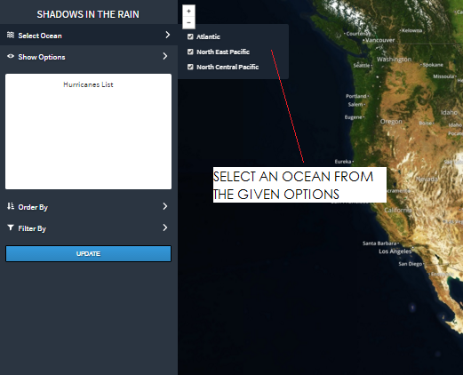
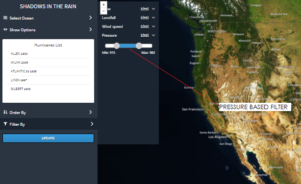
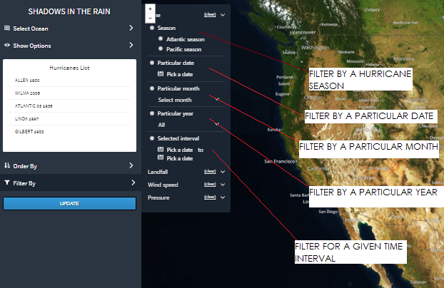
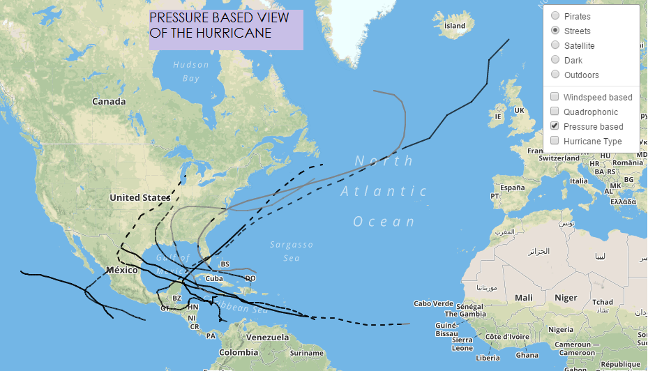
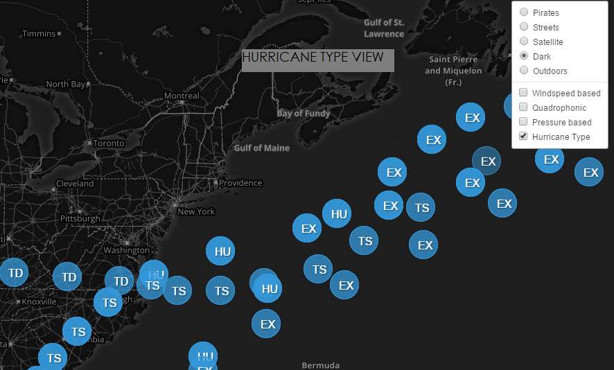

How to Use
Controls:
- The controls menu is where the app lets user choose various option on which a list of hurricanes is plotted on the map.
- 1. The side bar lets user select hurricanes from central pacific, north east pacific ocean, atlantic ocean or all of them.
- 2. After selecting the oceans the app also lets user select top 5, top 10 overall hurricanes.
- 3. Then comes the list of hurricanes populated according to the users choice, Order By option allows the user to order the list alphabetically, chronological order, maximum wind speed and minimum pressure.
- 4. The "Filter By" option lets user refine the list of hurricanes based on conditions like maximum wind speed, minimum pressure, time as of particular year, season, date, day and date range.
- 5. The side bar has an order by option which allows the user to order the list (like alphabetically) of hurricanes fetched.



Parameters:
- Once a selection is made and the update button is clicked, the app displays all hurricanes on the map. The following are the parameters represented:
- 1. The color depicts the wind speed categorized based on Saffir Simpson scale.
- 2. The circles depict quadrophonic wind radii.
- 3. Pressure is depicted using line type - dashed or straight.
- 4. All these layers can be individually selected or unselected.
- 5. To see a different set of hurricanes, make a selection in the left panel and hit update.
- 6. The list box will get updated according to the most recent selection made.


Playing back entire hurricane Seasons:
- 1. The app allows user to playback an entire season on the map.
- 2. The hurricanes start showing up on the map the day they were formed and trace the path until it cease to exist.
- 3. Play,pause, fast forward controls have been overlayed on the map and also a progress bar shows the progress of the playback.
- 4. Apart from allowing the user to playback the hurricane, the user can also pause at a particular point.
- 5. Changing underlaying map representation: At any point of time user can choose to change the underlying map representation. On the top right corner of the map is a small icon , which on clicking allows the user to change the underlying map representation. This is useful while viewing different kinds of data.
- Graphs: Apart from plotting the hurricanes on the map, the app also let's user view data as graphs. There as several graphs that show various types of data.